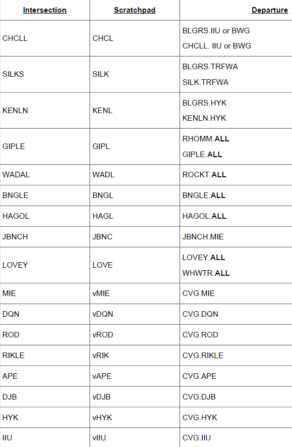

Disclaimer: This webpage is not meant to look pretty, but is meant to be functional. This page is also limited by my own knowledge and anything i have learned in any vZID documents. If you find any issues with spelling, or logic, or something that is simply incorrect, let Stephen Welsh know either via the Github Issues page, or Discord.
Github Issues pageDisclaimer 2: This document is presented as a suppliment to official ZID documents, but is not a replacement to said documents.
Wx = Altimeter or current ATIS letter
RB = X for verbal, P for PDC
RWY = runway they will take off from
h and s = Heading and speed for radar controllers, sometimes for local to assign runway heading
h slot is also used for the first fix on an RNAV
Aircraft Callsign, Position callsign,
C Cleared to (Destination) Airport,
R Direct (VOR/FIX), then as filed,
A Maintain (Initial Alt),
Expect Flight Level (###) 1-0 minutes after departure,
F Departure Frequency (122.8),
T Squawk ####.
Wait for READBACK
(Aircraft Callsign), Readback Correct,
"ALTIMETER (####)" or "Info (ATIS) is current" or "Thanks for Info (ATIS)" if they called up with Atis
Expect Runway (____)
Push and start at your discression
Advise ready to taxi golding short of (point / taxiway)
Aircraft Callsign, Position callsign,
C Cleared to (Destination) Airport,
R via Radar Vectors (VOR/FIX), then as filed,
A Maintain (Initial Alt),
Expect Flight Level (###) 1-0 minutes after departure,
F Departure Frequency (###.##),
T Squawk ####.
Wait for READBACK
(Aircraft Callsign), Readback Correct,
"ALTIMETER (####)" or "Info (ATIS) is current" or "Thanks for Info (ATIS)" if they called up with Atis
Expect Runway (____)
Push and start at your discression
Advise ready to taxi golding short of (point / taxiway)
Aircraft Callsign, Position callsign,
C Cleared to (Destination) Airport,
R via the ABCDE3 Departure, ZYXWV transition, then as filed,
A Maintain (Initial Alt),
Expect Flight Level (###) 1-0 minutes after departure,
F Departure Frequency (###.##),
T Squawk ####.
Wait for READBACK
(Aircraft Callsign), Readback Correct,
"ALTIMETER (####)" or "Info (ATIS) is current" or "Thanks for Info (ATIS)" if they called up with Atis
Expect Runway (____)
Push and start at your discression
Advise ready to taxi golding short of (point / taxiway)
Aircraft Callsign, Position callsign,
Maintain VFR at or below (Altitude), (025 for props 045 for jets initially)
F Departure Frequency (###.##),
T Squawk ####.
Wait for READBACK
(Aircraft Callsign), Readback Correct,
"ALTIMETER (####)" or "Info (ATIS) is current" or "Thanks for Info (ATIS)" if they called up with Atis
Expect Runway (____)
Push and start at your discression
Advise ready to taxi golding short of (point / taxiway)
(Aircraft Callsign)
Runway (RWY) Taxi VIA (_____)
*Make use of "Hold short runway X" and "cross runway X" as nessasary*
*Remember to ask controllers above for active runway crossings*
*Remember to inform above controllers of completed runway crossings*
*Remember to tell an aircraft to contact an above controller and send the aircraft's strip*
*Fill in info here*
The following steps will be completed when opening a position at vZID:
When Closing a facility, the following procedure shall be followed:
Attention all aircraft this frequency, [position name] will be closing in ## minutes.
Put this in CVG ATIS at all times:
New Scenery Available for CVG. The old runways 36L - 18R is the new 36 and 18 Center.
“NOISE ABATEMENT PROCEDURES IN EFFECT. REQUESTS FOR OTHER RUNWAYS MUST INCLUDE A STATEMENT OF OPERATIONAL NECESSITY.”
used as needed
No SVFR operations
Runway 36L / 18R is new-ish. Simulators older than xplane 11 (or maybe FSX) may not have the new runway
Always refer to the Center runway as Center
Normal operations are arriving on 18C and 18L
Departing on 27 (or sometimes 18L for cargo aircraft)
Parallel taxiways:
Further from the runway (E, S, J) for taxing departures
Closer to the runway (D, K, T) for taxing Arrivals
Push flight strips to local in the order of departure.
Instruct aircraft to monitor local's frequency if strip order is correct.
VFR aircraft require an explicit clearance out of the Class bravo
All VFR aircraft require a flight plan. CD can make one for them.
Minimum information:
Aircraft requesting Flight following shall be coordinated with appropriate radar position prior to give ing a class bravo clearance.
VFR
shall be placed in the scratchpad. FVFR
if requesting flight following
VFR close traffic pattern shall be coordinated with tower, no unique beacon code required
IFR Turbojets shall be given 6000 feet initially, then filed altitude 1-0 minutes after
Other IFR aircraft filed higher than 4000 feet, shall be given 4000 initially, with an Expect filed 1-0 minutes after
VFR aircraft shall be instructed to maintain VFR at or below 5,500 feet
Aircraft departing 27/9 shall be issued departure freq. for radar sector appropriate for their direction of flight
North / South configuration: Bearcat if going East. Wildcat if going West.
No push back or engine start instructions
No ramp control services by controllers
Aircraft not in LOA compliance require coordination
All aircraft shall be encourage to file a SID. otherwise they need to be coordinated with radar
For arrivals to nearby tracons, give the CVG5 departure
Assigned at or below 11,000 ft MSL
Practice approaches
Scratchpad format: Example: V36R
(approach type)(runway)
V = Visual, I - ILS, R = Rnav, O = VOR , N = NDB
Local IFR departures below 6000 ft to avoid handoffs
*Red callsigns are only used during events*
*Green callsigns are the primary positions*
ATIS | KCVG_ATIS | CA | 135.300
Clearance Delivery | CVG_DEL | 1C | 127.175
East Ground | CVG_E_GND | 1U | 121.300
West Ground | CVG_W_GND | 1G | 121.700
Local Center | CVG_C_TWR | 1T | 118.300
Local East | CVG_E_TWR | 1D | 118.975
Local West | CVG_W_TWR | 1A | 133.325
Feeder North | CVG_N_APP | 1N | 123.875
Feeder South | CVG_S_APP | 1S | 119.700
Final East | CVG_E_APP | 1F | 124.700
Final West | CVG_W_APP | 1V | 127.725
Satellite Radar | CVG_L_DEP | 1L | 121.000
Wildcat Departure West | CVG_W_DEP | 1W | 126.650
Bearcat Departure East | CVG_E_DEP | 1B | 128.700
*Fill in info here*
No Special VFR fixed wing operations
The pads on P and J are non-movement areas
V and G not for larger aircraft >30 passengers
No Helicopters flying over the terminal
Millionaire - North East
Signature - South East
Give way for aircraft exiting 5R/23L on D-3 thru D-6
Departure Althtudes
Jets - 5000
Props - 3000
Non Departure runways - 3000
Jets cleared via IND1 if no DP is specified
For arrivals to nearby TRACONS
IND1.DQN KDAY
IND1.TTH KHUF
IND1.CVG KCVG
IND1.MZZ KFWA
IND1.VHP IIU KSDF
*Red callsigns are only used during events*
*Green callsigns are the primary positions*
ATIS | KIND_ATIS | IA | 134.250
Clearance Delivery | IND_DEL | 3C | 128.750
East Ground | IND_E_GND | 3G | 121.900
West Ground | IND_W_GND | 3H | 121.800
Local East | IND_E_TWR | 3Y | 120.900
Local West | IND_W_TWR | 3X | 127.825
Feeder East | IND_D_APP | 3D | 127.150
Feeder West | IND_B_APP | 3B | 124.650
Final East | IND_F_APP | 3F | 128.175
Final West | IND_W_APP | 3I | 120.525
Departure East | IND_E_DEP | 3E | 124.950
Departure West | IND_W_DEP | 3W | 119.050
No Special VFR fixed wing operations
Aircraft remaining in the pattern will be asigned a squawk of 1201, adding one for each aircraft in the pattern
Jets are assigned an initial altitude of 5000 (050 on strips), props and turboprops are assigned 3000 (030)
*Red callsigns are only used during events*
*Green callsigns are the primary positions*
ATIS | KSDF_ATIS | SA | 118.725
Clearance Delivery | SDF_DEL | 4C | 126.100
East Ground | SDF_E_GND | 4G | 121.700
West Ground | SDF_W_GND | 4Y | 119.825
Local East | SDF_E_TWR | 4L | 124.200
Local West | SDF_W_TWR | 4T | 135.200
Feeder East | SDF_A_APP | 4A | 134.150
Feeder West | SDF_I_APP | 4I | 132.325
Final East | SDF_E_APP | 4E | 135.775
Final West | SDF_W_APP | 4W | 120.300
Departure East | SDF_B_DEP | 4B | 132.075
Departure West | SDF_D_DEP | 4D | 123.675
Order of Combination
*Fill in info here*
F1 <asel> Toggle full/partial data tag
F2 then airport identifier for weather box at the top of VRC
F4 <sectorID> <asel> to initiate handoff to a controller
F5 <asel> change cruise
F7 <asel> Metar for arrival airport
F8 <asel> to change temp altitude
F9 <asel> to assign squak
F9 v | r | t <asel> to assign voice tag (when not put in by default by a flight plan)
CTRL + click on an aircraft to get aircraft flight plan
CTRL + ALT + click aircraft | Draw aircraft's filed route on scope
CTRL + up or down arrow to change text log size
CTRL + S silence conflict alert sound
ESC (in scope) clears command line if not empty, else clears radio selected aircraft.
Click on aircraft, then <asel> to start a count up timer.
It helps to know who called up first for clearance. press <asel> again to clear the timer
Home <asel> send contact request
Double click flight strip | equivalent to clicking on the aircraft
Alt Click flight strip to delete flight strip or seperator
ALT Click aircraft to add strip to the bay
.wx or .metar <ICAO>
.atis for own atis or .atis [callsign] for someone elses
.transfer sectorID to handoff all targets to controller
.chat nobody - to test commands
.showstats - Use to show controlling stats from the current session. (Ctrl + up or down to resize text window)
.recv - are you able to copy voice?
.cruzh <lower alt> <higher alt> - (In FL) send a msg to someone about wrong altitude for direction of flight with 2 suggestions
.cruzl <lower alt> <higher alt> - (below FL) send a msg to someone about wrong altitude for direction of flight with 2 suggestions
.pdcsid <frequency using identifier (ex: 2W)> - PDC with a SID
.pdcsido - PDC with a SID to Unicom
.pdcvec <first waypoint> <frequency using identifier (ex: 2W)> - PDC, vectors to first waypoint
.pdcveco <first waypoint> - PDC, vectors to first waypoint to Unicom
.pdc2 <runway> <Taxiway letter> <frequency using identifier (ex: 2W)> - message sent after PDC
.strip LABEL add strip for the specified aircraft to the bay
.sep LABEL create a seperator
.log FILENAME
.cor - Clearance on request, Standby
.cor1 <number> - Clearance on request, number $1, standby
.gatis <frequency using identifier (ex: 2W)>- Be advised information $atiscode is available on $freq($1). (IM ASSUMING THIS IS HOW THE FREAQUENCY PART WORKS)
.cruzh <lower alt> <higher alt> - (In FL) send a msg to someone about wrong altitude for direction of flight with 2 suggestions
.cruzl <lower alt> <higher alt> - (below FL) send a msg to someone about wrong altitude for direction of flight with 2 suggestions
.rte - Cleared to $arr, via $route. Rest of clearance remains unchanged.
.norte <cardinal direction> - VFR to the (direction), departure freq unicom, squawk $squawk
.vfrclr <cardinal direction> <frequency using identifier (ex: 2W)> - VFR to the (direction) approved, Maintain VFR at/below $temp, frequency $freq($2) squawk $squawk
.vfrpat <runway>- remain in the pattern, expect Runway $uc($1), squawk $squawk
.rb - Readback correct.
.rbc <runway> - Readback correct, runway $uc($1), push and start pilot's discretion, advise ready to taxi, altimeter $altim($dep)
.rbca <runway> <taxiway>- Readback correct, expect runway $uc($1), push start pilot's discretion, call for taxi holding short taxiway $uc($2), altimeter $altim($dep)
.rbcatis <runway> <taxiway> - Readback correct, ATIS info $atiscode current, expect runway $uc($1), push start pilot's discretion, call for taxi holding short taxiway $uc($2).
.rbcatisdel <runway> <frequency using identifier (ex: 2W)> - Readback correct, ATIS info $atiscode current, expect runway $1, push start pilot's discretion, contact $radioname($2) on $freq($2)
.callgnd <taxiway> - Readback correct, push start pilot's discretion, call this freq short of taxiway $uc($1) when ready to taxi, altimeter $altim($dep)
.calldel <frequency using identifier (ex: 2W)> <taxiway> - Readback correct, push start pilot's discretion, contact $radioname($1) on $freq($1) short taxiway $uc($2) when ready taxi, altimeter $altim($dep)
.advise - Advise ready to taxi.
.push - Push start pilot's discretion
*Fill in info here*
*Fill in info here*
Maintain VFR at or below <alt>, departure on <freq>, squak <code>
VFR Flight Following (Mark VFF) in scratchpad (hit insert and type VFF while aircraft is selected)
REMEBER TO CLEAR WHEN AIRCRAFT IS LEAVING ARTCC
For missing slant code:
"What are your navigation capabilities?"
PM in VRC:
right click on an aircraft
"I have an admendment for your route. Advise if you are able to accept.""
"I will amend your flight plan. The rest of your clearance remains unchanged"
A cloud ceiling is broken (BKN) or OVC
For voice atis. preface with ceiling (ex: ceiling bkn 011 ovc 055)
Squawking normal. star trail.
not mode C. triangle trail.
squawking C and flashing (or 0000) = incorrect squawk code
letters behind aircraft - based on current controller's arts tag from POF file
leave out un-nessasary words (initially)
advice higher controller when runway crossing complete
Aircraft above FL280 have a gap of 1000 feet (like below FL280) but require /L or /W certification
AAL | American
AAY | Allegiant
ACA | Air Canada
AFL | Aroflot
AMX | AeroMexico
ANA | All Nippon
APX | Capair
ASA | Alaska
ATN | Air Transport
AWE | Cactus (US airways)
BAW | Speedbird
CLY | Clay-Lacy
CMP | Copa
DAL | Delta
DCM | Dot Com
DHL | DHL
DLH | Lufthansa
EDV | Endevor
EGH | ?
EJA | Exec Jet
ETX | Elite
FDX | Fedex
FFT | Frontier Flght
FPY | AfriCompany
GTI | Giant (Atlas Air)
JBU | Jet Blue
JIA | Blue Streak
LJT | Learjet?
MTN | Mountain
MXY | Moxy
PAA | "Clipper" Pan Am
PAY | Pacific?
PFL | Proflight?
QFA | Quantas
RCH | Reach (Military)
RPA | "Brickyard" Republic Airways
SCX | Sun Country
SMX | AliExpress
SOO | Southern Air
SWA | Southwest
SWG | Sunwing
SWR | Swiss
TPC | Pilot Club
TSC | Air Transat
UAL | United
UCA | Commuter
UPS | UPS
VIR | Virgin
VPC | Alpaca
WAT | Walker or Wings Air
WJA | WestJet
WN | Southwest IATA code (Inform pilots WN is the IATA code, SWA is the ICAO code)
WWA | Westwind
WWW | Janet
XAA | Aeronautical Radio